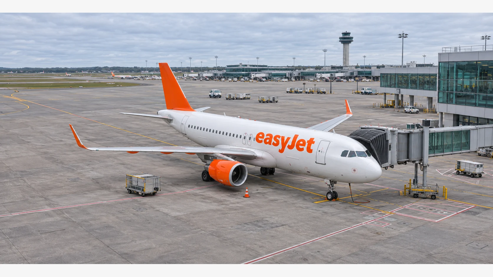

easyJet Shareholders Back Apollo’s £5.7 Billion Takeover
Shareholders have approved Apollo’s proposed buyout of easyJet, clearing a major hurdle for the £5.7 billion deal. Court and regulatory steps remain before it can close.

easyJet shareholders have approved Apollo’s proposed £5.7 billion takeover of the British airline, according to Reuters, moving one of Europe’s largest airline buyouts closer to completion. The vote removes a major uncertainty over the offer, although the transaction still needs to clear its remaining conditions before ownership changes hands.
Apollo’s proposed acquisition, announced in August, offers 715 pence in cash for each easyJet share. The price values the airline’s issued and to-be-issued share capital at approximately £5.7 billion. The buyer is Eagle Bidco, a company indirectly owned by funds managed by affiliates of Apollo. easyJet’s board recommended the cash offer when the agreement was announced.
The outcome matters to shareholders because a recommended deal can fail without the required support. It also matters for the airline’s workers, creditors and customers: a public company is potentially moving toward a private ownership structure in an industry where fuel, aircraft availability and regulation can quickly change the economics of a business plan.
## A vote is a milestone, not completion
Reuters reported that shareholders approved the acquisition on Wednesday. The initial report did not disclose the final voting percentages. easyJet’s scheme documentation set out separate court and general meetings, with approval thresholds applying to each. It also said the transaction remained subject to further conditions, including court sanction. The available report does not establish that every regulatory condition has already been satisfied.
Under the previously published timetable, the scheme was expected to become effective before the end of the first calendar quarter of 2027, subject to the conditions being met or waived where permitted. That is an earlier company expectation, not a newly confirmed closing date. Investors should look for the formal results announcement and subsequent notices on the outstanding approvals and court timetable.
The distinction between an approved offer and a completed sale is central to merger-arbitrage pricing. A share price can remain below an agreed cash offer because the money is payable only after closing, the outcome remains conditional, and capital is tied up in the meantime. The size of any spread changes with market prices and the market’s assessment of those risks.
## How the agreed offer developed
The Apollo agreement followed competing approaches for easyJet. The airline said its board rejected an earlier Castlelake proposal at £6.50 a share, then became minded to recommend a £6.90 proposal before Apollo put forward £7.15. Castlelake later said it would not make a firm offer. Those earlier proposals provide context for the final agreed price; they are not alternative bids currently confirmed to be active.
The scheme also included an alternative offer under which eligible shareholders could elect to retain an interest in an unlisted vehicle. easyJet’s directors recommended the cash acquisition but did not make a recommendation on the alternative because its suitability depends on individual circumstances. The two routes expose holders to different questions about liquidity and future valuation.
For a holder receiving cash, the eventual result depends on the offer terms and completion. An investor considering unlisted shares would instead need to assess how and when an interest could be sold, what information the private company would disclose and how future financing might affect ownership. Those are structural differences, not a forecast that either choice will produce a better return.
## What private ownership changes
Private equity acquisitions typically combine investor capital with financing, but the financing of a particular deal has to be assessed from its own documents. The shareholder vote does not by itself establish the final amount of debt that easyJet will carry or the outcome for employees. TTN’s guide to take-private deals explains why the location of debt and the cash needed to service it matter after a company leaves public markets.
Airlines face substantial recurring obligations for aircraft, staff, maintenance and airport access. A new owner’s room to invest will depend on operating cash flow as well as financing terms. Lower or higher fuel prices, disrupted travel demand and aircraft delivery delays can each change the cash available for debt service and expansion. The vote does not resolve those operating risks.
easyJet has said Apollo intends to retain the airline’s brand and maintain its existing brand licence agreement. The airline also said its UK headquarters and operating licences in the UK, Austria and Switzerland would remain unchanged under the stated plans. Those commitments should be read alongside the deal documentation and any regulatory requirements, rather than as a guarantee that the business will never change after completion.
The next concrete test is the formal progress of the scheme: publication of the detailed vote, satisfaction of the applicable conditions and the court process. Until those steps are completed, easyJet remains a listed company and the £5.7 billion acquisition remains a proposed transaction, albeit one that has passed a significant shareholder hurdle.
Sources (3)
For informational purposes. This article is not investment advice.